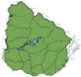
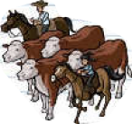
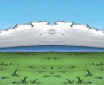

Vegetation: The vegetation of the prairie is composed of grasses, legumes, and shrubs, such as chirca.

Economic activities: In Uruguay, the natural prairie occupies 80% of the territory.
For this reason, agricultural activities constitute the main productive sector of the country.

Climate: The prairies are characterized by having average temperatures of 15 °C and precipitation between 500 and 1000 mm.